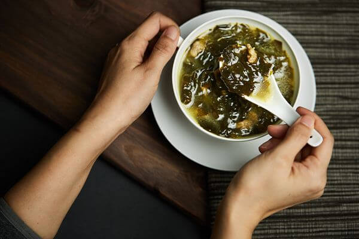
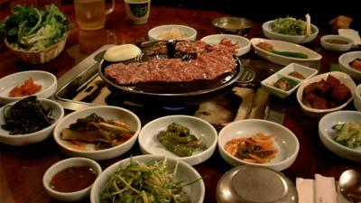
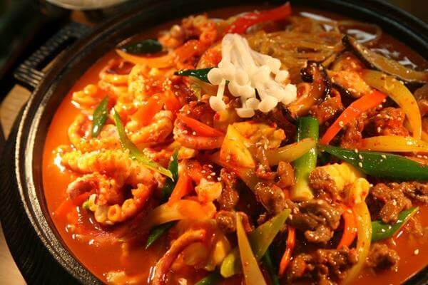

Jajanan Korea
Bulgogi
Bulgogi (bahasa Korea: 불 api, dan 고기 daging) adalah olahan daging asal Korea. Daging yang digunakan antara lain daging sirloin atau bagian daging sapi pilihan. Bumbu bulgogi adalah campuran kecap asin dan gula ditambah rempah lain bergantung pada resep dan daerah di Korea. Sebelum dimakan, daun selada digunakan untuk membungkus bulgogi bersama kimchi, bawang putih, atau bumbu penyedap lain. Di Jepang, makanan yang sejenis disebut Yakiniku.
Jjajangmyeon
Jajangmyeon (atau jjajangmyeon) adalah jenis Masakan Korea yaitu mi saus pasta kacang kedelai hitam. Jajangmyeon dipengaruhi kuliner Tionghoa, dan orang Tiongkok biasa menyebutnya Zhajiangmian (炸醬麵). Jajang artinya saus goreng, dan myeon artinya mi.
Japchae
Japchae adalah makanan Korea berupa sohun (dang myeon) yang dicampur dengan berbagai jenis sayuran dan daging sapi. Makanan ini termasuk salah satu banchan, dan dimakan sebagai lauk, terutama dalam pesta dan kesempatan khusus. Sayuran yang digunakan biasanya sayuran yang sedang musim. Japchae ditulis dengan dua aksara hanja, jap (hangul:잡, hanja:雜, dicampur dan diaduk) dan chae (hangul:채, hanja:菜, sayuran).

Miyeok Guk
Miyeokguk (미역국) adalah guk yang bahan utamanya miyeok, (rumput laut coklat; Undaria pinnatifida). Kuah terbuat dari kaldu tulang sapi dan kecap. Menurut tradisi, orang Korea menyajikan sup rumput laut kepada ibu yang baru melahirkan karena dipercaya miyeok dapat memperbanyak asi. Makan sup miyeok juga dilakukan pada hari ulang tahun
Tteok
Tteok adalah penganan atau kue asal Korea yang dibuat dari serealia, terutama beras atau ketan. Bahan dan cara pembuatan berbeda-beda menurut wilayahnya di Korea. Tteok juga dibuat sebagai kue yang rasanya manis dalam berbagai variasi rasa untuk hari-hari perayaan musim, termasuk perayaan tahun baru Korea.
Nakji Bokkeum
Makanan ini juga merupakan salah satu olahan laut paling populer di Korea Selatan. Nakji Bokkeum adalah gurita yang digoreng kering dan disajikan bersama tumis sayur-sayuran maupun dimasukkan sebagai topping untuk mie khas Korea. Selain kaya cita rasa, masakan ini sangat digemari pula oleh turis internasional. Nakji Bokkeum memiliki sensasi tersendiri di lidah, terutama dari pasta cabe yang digunakan untuk menumis sayur-sayuran serta gurita tersebut.

Gogigui
Makanan yang satu ini merupakan makanan pilihan yang bisa kalian coba, karena makanan dengan jenis BBQ khas korea ini memiliki rasa yang sangat lezat. Biasanya makanan bernama Gogigui ini di masak dengan panggangan meja. Dalam membuat Gogigui ini, berbagai jenis daging dan sayur di campur dengan saus kemudian di panggang hingga menghasilkan rasa lezat. Gogigui sangat sering di sajikan di restoran-restoran yang ada di korea, jadi dengan mudah kalian bisa menemukan makanan khas korea bernama Gogigui ini.

Haejangguk
Haejangguk (해장국) adalah jenis guk. Pada zaman dahulu, haejangguk dimakan untuk menyadarkan diri dari rasa mabuk akibat minum sul, sehingga dinamakan juga sulguk ("sup minuman keras"). Lama-kelamaan, haejangguk dikenal sebagai hidangan populer di malam hari. Haejangguk tertulis dalam buku masak Dinasti Joseon tahun 1600-an dengan nama seongjutang yang disantap guna menyadarkan orang dari mabuk. Walau berasal dari Joseon, resep aslinya tak diketahui.

Jjukumi
Korea Selatan memang surga bagi para pecinta seafood. Ya, masyarakat di sini sangat kreatif dalam mengolah berbagai bahan laut menjadi sebuah masakan yang sangat lezat. Salah satunya adalah jjukumi, yang terbuat dari gurita berukuran kecil yang dimasak dengan api besar dalam rendaman saus gochugang yang sangat lezat. Saking populernya, di Korea Selatan bahkan ada sebuah lokasi yang diberi nama Jjukumi Street, di mana ada ratusan restoran yang menyajikan masakan ini sebagai menu utama. Tentu saja, tempat ini wajib dikunjungi jika kelak anda berkesempatan mengunjungi Korea Selatan.

Jeongol
Jeongol adalah makanan Korea berupa berbagai sup yang direbus di dalam panci besar, dan dihidangkan di tengah-tengah meja untuk dimakan bersama. Dibandingkan dengan jjigae yang hanya berisi satu jenis bahan utama, bahan untuk isi jeongol biasanya jauh lebih beragam. Berbeda dari jjigae yang bermula dari makanan rakyat, jeongol seperti halnya gujeolpan bermula dari makanan untuk kalangan bangsawan atau anggota keluarga kerajaan.
Terimakasih telah berkunjung :) Jika ada saran dan kritik silahkan tulis dibawah